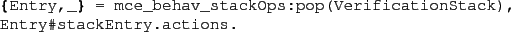
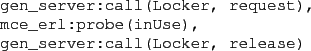
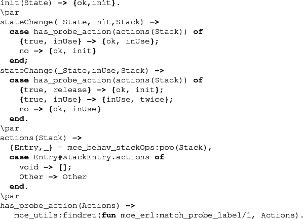

Next: Using probe states to Up: Monitors Previous: Monitors Contents
An alternative is to instead inspect the actions a program causes.
The third parameter to @stateChange@ is the verification stack,
which contains the actions of the programs (if the
field @record_actions@ in @mce_opts@ is not false).
The actions that the program performed after leaving the program state,
and before entering the program state now checked is returned
as a list by the following code fragment:

The McErlang modules @mce_erl@ and @mce_erl_actions@ contains application interfaces for examining program actions.
A convenient means to determine if a program has performed a certain action is to instrument said program with synthetic probe actions, and during model checking determine if these synthetic actions are present. A program can cause a probe action by calling the @mce_erl:probe(Label::term(),Term::term())@ or @mce_erl:probe(Label::term())@ functions (where @Label@ and @Term@ are general terms).
As an example we show a fragment of a client that allocates resources
by sending a request message to a (@gen_server@),
and then releasing the resource by sending a new message:

The property we want to establish is mutual exclusion,
i.e., that there are not two clients simultaneously accessing
the shared resource. To do this we instrument the client
to perform a probe action whenever a resource has been granted,
and before it is has been released.
We can then check for the existence of a ``mutual exclusion failure''
using the following safety monitor fragment:
